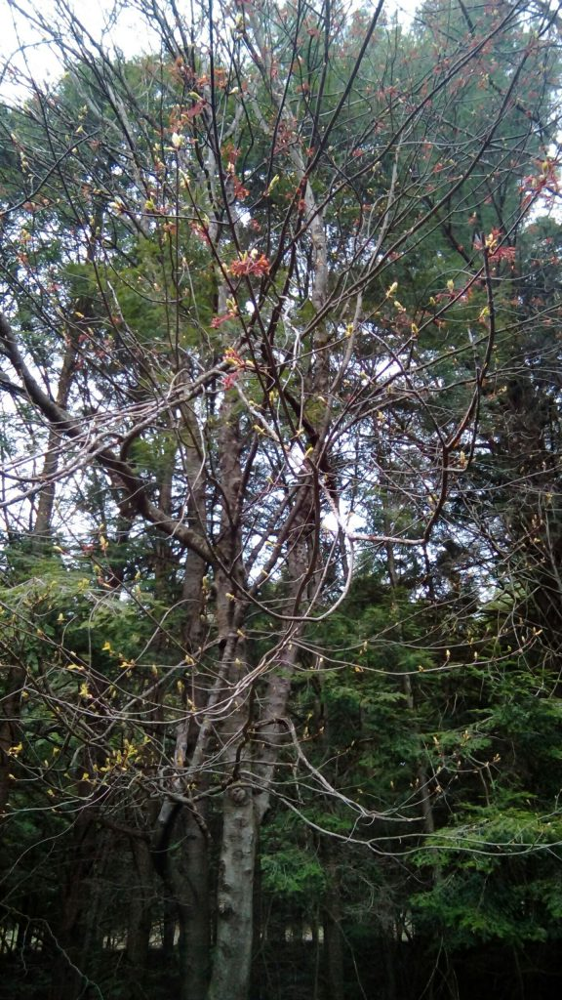
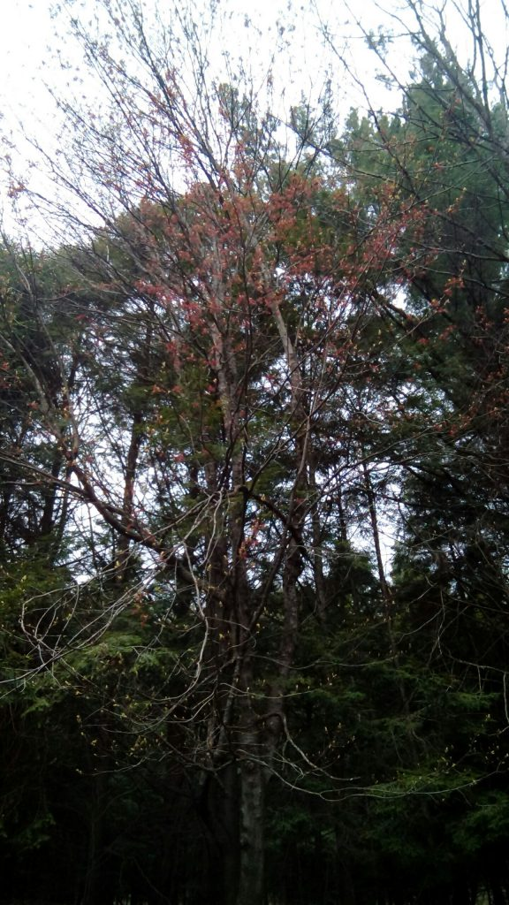
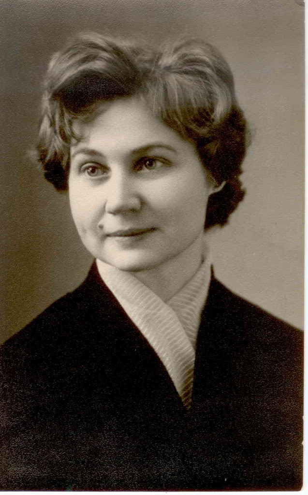
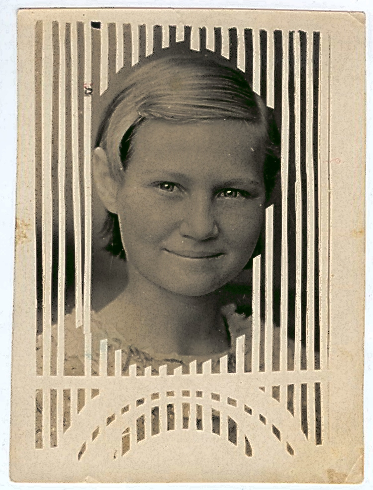
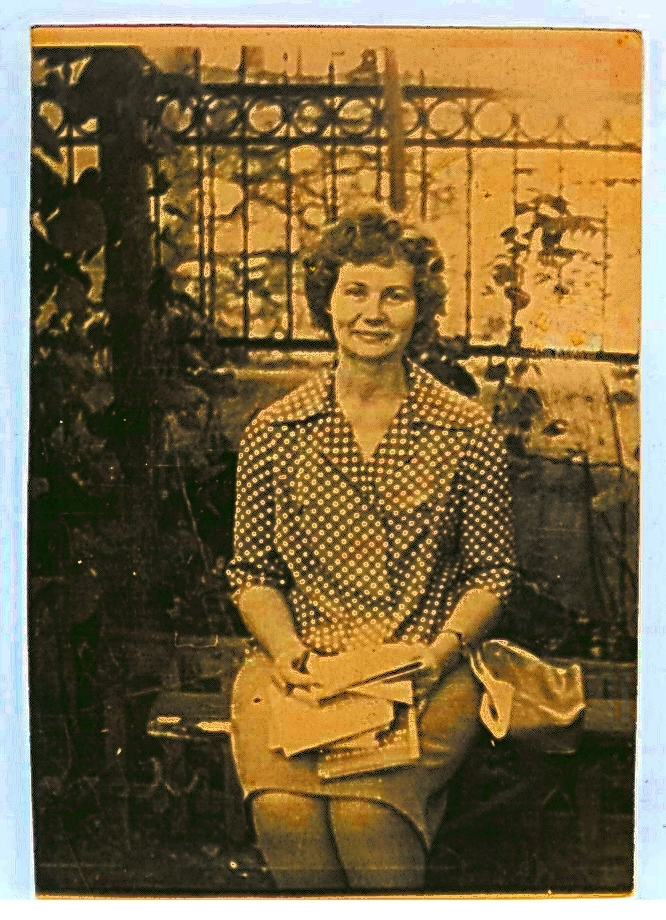
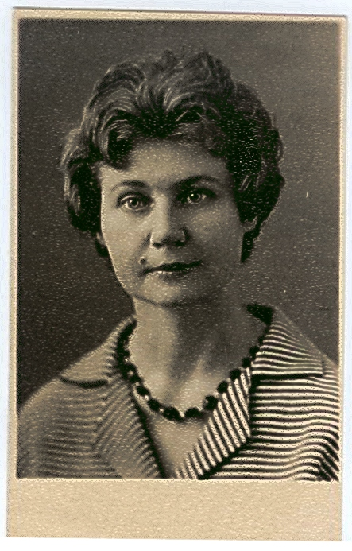

After months of negotiations, I am thrilled to be able to share the Big Announcement at last — The Atlantis Grail series of books (which includes the bestselling science fiction novels QUALIFY, COMPETE, WIN, and SURVIVE) has been optioned for development as a feature film series and/or TV series.
See the The Atlantis Grail Fan Discussion Panel below where I make the announcement on September 1, 2018 at Dragon*con in Atlanta, GA, and discuss the process.
In other news, WIN (The Atlantis Grail, Book 3) was a Finalist for the 2018 Dragon Award for Best Science Fiction Novel.
See the Dragon Awards 2018 Ballot.
A few months ago, GoPro Video asked to use my various quotes as narration in their latest action video production, and I said yes.
Now, I'm thrilled to be finally able to share this awesome project with you!
The title is "GoPro Surf: Inside the Legendary Barrels of Namibia" starring amazing pro surfers Alex Smith, Koa Smith, Koa Rothman, Bianca Buitendag, Benji Brand, and Anthony Walsh, surfing both ocean and desert. My quote narration appears as layered text throughout the video. Enjoy! :-)

MOTHER
My Mother came up as rosy buds
On the
branches of the tree
Right outside my bedroom window.
Her ashes buried in the Fall
Lay dormant
under the snow of Winter
And now the tree has woken
And taken her in, with the help of the Spring rains.
She is flowing with sweet sap into the tallest branches,
and soon the mauve and rosy buds
will open
into green leaves of Summer—her season.
But now, still fresh as springtime,
she
looks into my window, looks in at me,
budding branches stirring
softly in the wind.
Every time I glance up, I see her bright presence,
With me, now, alive in the moment.
Next year it will be different,
the tree
will have flowered and moved on,
traces of her ashes diluted in the
earth, dissipated gently.
But for now, Mom’s last physical presence
is
the strongest it will ever be in the tangible world,
And the tree is
full of joy, watching me.
Vera Nazarian
5-9-2016
Monday

Zinaida Petrovna Nazarian, August 19, 1932 – February 3, 2015

Zinaida Petrovna Nazarian
My beloved mother, kind, generous, warmhearted, long-suffering, enduring, brave, the gentlest, light-filled soul you
may ever know, died at the age of 82, under hospice care at home in Vermont at 10:22 PM at night on Tuesday (2/3/15)
after two difficult months of what we thought was a severe, relentless flu and turned out to be leukemia. She
already survived ovarian cancer in 2007--a year filled with multiple surgeries, complications, infections,
chemotherapy, hernias, hospital stays--and this time decided that she did not want to go through that again. With
her passing, the generation of my fathers is now gone.
Mom was a true survivor. She survived the early days of the Soviet Union, the Nazi occupation of Crimea during World War II, not once but twice, as she, a little girl, and my grandmother fled the Germans twice as refugees, all across Central Asia and back, riding in freight trains, living homeless underneath an open sky and huddling under blankets while getting strafed from overhead by German sniper planes, being rescued and ferried by a battleship in the Black Sea, starving among death and dysentery, and finally returning home to Crimea when the war was over, and seeing her parents divorce as soon as her father, my grandfather Pyotr Ilyich Ushanov (a captain of a tank division in the Red Army) returned from the war a changed man.
Mom was true old-fashioned Russian, through and through. She grew up in Simferopol, Crimea, living with her now-divorced mother, my grandmother Antonina Ivanovna Dementieva (who was the equivalent of the town mayor of Simferopol, a high ranking position) and became a teacher of Russian Language and Literature. She taught the equivalent of older high school and adult lectures, in Simferopol and other local regions of Crimea including military officers schools, in a tiny village school in Siberia, and eventually in Moscow.
Mom was cultured, refined and always in pursuit of knowledge and learning, an expert in classics of world literature and history. She did her final graduation thesis on Jack London, and I remember when I visited Oakland, CA for the first time, Mom told me with reverence to look out for things related to him. All my love of language and reading I owe to Mom, who imbued my soul with myth, imagery, and literature.
When she lived in Moscow, studying to apply to the equivalent of graduate school, she met my Dad, Georgii (George) Nazarian, an Armenian from Tbilisi, Georgia, in the Moscow Library, of all places. They married and she stayed in Moscow permanently, until the mid seventies when we immigrated to the West, leaving the USSR as refugees to Lebanon.
This was when Mom got to survive her second war, the civil war in Lebanon, and be a refugee yet again as we fled with other Armenian families to Greece, and finally the United States, where after a long and arduous process she became a Permanent Resident and then a US Citizen (among other things, she had to get fingerprinted more than eight times by the INS, because her fingerprints were nearly non-existent, the normal whorl patterns worn off the tips of her fingers from a lifetime of doing hot water laundry by hand, as all other Russian women of the time.)
Mom was always reading one book or another, mostly classics in Russian (or Russian translation) and in English. When I was a little girl, she originally thought and hoped I would be a literature teacher too, but I turned out a writer instead, with many thanks to her, thus staying true to the general notion, and working within the field of literary pursuits. She even named me “Vera” (which means “Faith” in Russian), for her favorite female literary character Vera, from Ivan Goncharov's The Precipice. (Even now I want to ask Mom a specific detail about this book, and turn, and realize she is not there; I can no longer do that, I can never ask her about anything ever again...)

Although she claimed she was not a writer herself, at one point
many years later, when we were living in Winnetka, California, Mom tried creative writing, and wrote, among other
things, in Russian, a novella-length variation of Jane Austen's Persuasion, her favorite Austen novel! She
chose to write about Captain Wentworth traveling on a ship, heartbroken and thinking of his lost love. In Mom's
story, Wentworth looks out into the ocean and encounters a mermaid, whose lovely dialogue with him convinces him to
return to seek Anne Elliot's love once more—a beautiful, heart-wrenching, haunting, and well written fantasy novella
that I just might publish under Mom's own name in Russian, one of these days!
In addition to literature, Mom loved classical music, especially symphonies and orchestral music, and classical Russian Ballet. Back in Russia, she grew up listening to symphonies on the early radio programs. And later here in the US, we would always watch ballets and performances on PBS. Art and architecture was also a great love, and Mom enjoyed museums and art galleries whenever possible.

She'd dreamed of traveling the world, and got her wish in part,
when we became immigrants. At one amazing point, when we were refugees being bused in Greece from the Sounion coast
to the Athens medical center where they ran the required exams on us before allowing entrance to the US, we drove
right past the Acropolis. Mom and I started to scream in awe and excitement, pointing and saying, “That's the
Parthenon!” until other refugees on the bus were asking, “What, what?” and looking at us like we were crazy. We
never had a chance to get closer to the great temple, but that moment will stay with me always. We were this close
to it, but were not allowed to leave the bus. Classical Ancient Greece, our impossible dream, so near yet just out
of reach....
It's interesting to note that Mom's name, “Zinaida” means “Daughter of Zeus” in Russian. She was called “Zina” which was her usual nickname. And in the nineties, when a certain show was on air, it naturally made her Xena, Warrior Princess, something she really used to laugh about.

One of Mom's great talents was dramatic
reading. When she lectured, in a voice filled with feeling and amazing sensitive nuance, the students would pay such
attention that you could hear a pin drop. Once she mesmerized a hall of rowdy naval base academy officers with her
literature lecture, and not only because she was young and attractive but because she had a storyteller voice.
Another time she “woke up” a whole room of jaded party officials out of their usual meeting stupor by her
presentation of some extremely dry material which she brought to life. Dramatic reading is a powerful part of the
Russian tradition, and Mom was more than superb. She even acted briefly in her youth, in community theaters. And
yes, she could sing! We often sang together at home, as I grew up....
Mom was also a great lover of animals, with the biggest heart you can imagine, and over the years she took in and cared for so many strays--dogs, cats, birds, you name it. She even managed to convince other people to rescue and care for stray animals even while back in Lebanon and Greece. Two stray dogs had fallen off a cliff in Sounion, Greece, where we were staying and fellow Armenian refugee young men climbed down and pulled them out because of Mom insisting Dad make them! And in Lebanon she fed a whole family of strays, after a cat gave birth to kittens in the old stone house we were staying in—Mom made sure Dad would go to the local butcher shop every day and for a few pennies (25 Lebanese piasters) get the daily scraps, and the six cats followed Dad down the street in Beirut and waited for him outside the shop perching on trees and signposts, and coming down as soon as he came out. In 1985 we became vegetarians together as a family, for ethical reasons.
Even now that she is gone, our cats wander the rooms sadly in confusion, looking for her. And one cat in particular, Sunny, a feral stray black cat we rescued from the woods, gentle and wise, sits on her bed and grieves. Throughout her illness, he was literally guarding her, sitting next to her pillow and sleeping near her head, like a loyal loving protector.
These past few days, even as Mom lay in bed declining, going in and out of consciousness, she would constantly ask me
if I remembered to put out another can of cat food, or changed their water, or added dry food in the dishes. She also
asked me to make sure to put out birdseed or scraps of grain and bread for the hungry birds in the snow outside.
That's how much she worried and cared. And she constantly asked me if I myself had eaten, drank tea, rested, when
she herself could no longer take in food, and could barely drink.

Mom stayed sharp, alert, and clear-headed all the way up to
the end. While she was still sufficiently able to concentrate, I told her the plot of the last two episodes of the
new season of Downton Abbey, because she really loved that show, but was no longer able to watch TV. We
speculated on what would happen next and Mom really regretted not ever knowing the ending of the series and the
future episodes. We speculated whether or not Mary Crawley would eventually get together with Tom Branson, her
sister Sybil's widower. And when this latest episode aired on Sunday, sadly, Mom was no longer able to hear the
episode recap, she was too ill and tired....
Right now the house feels very strange and semi-empty without her. You can feel a tangible void, a presence missing, a kind of hollow lightness, an emptiness in her room where before it contained a rich charge of loving energy. The balance is shifted and the world has become more flimsy and transparent somehow, less tangible.
Every few moments I want to say something to her, look in her direction in the room, and she is not there.
Only her books remain, shelves full, and piles covering every surface, filled with gorgeous volumes of classics, philosophy, theology, history, art, and wonder.... From the walls, prints of classical paintings out of the Middle Ages look down upon her empty bed, and the bundles of her written journals filled with her living notes and beloved handwriting sit in stacks. They are the spirit of Tolstoy and Turgenev, Pushkin and Tchaikovsky, and the whole nineteenth century rolled into one, and then going farther back, receding into ancient history of old Rus, amid ancient onion dome cathedrals, then simple wooden terem churches, birch trees and rolling open country fields underneath a great sky....
Another part of the true soul of old Russia has left the world. The great bell of the cathedral tolls.
I am privileged to be her daughter.
May she rest in serene glory and well earned peace until we all reunite again on the other side, and into the light.